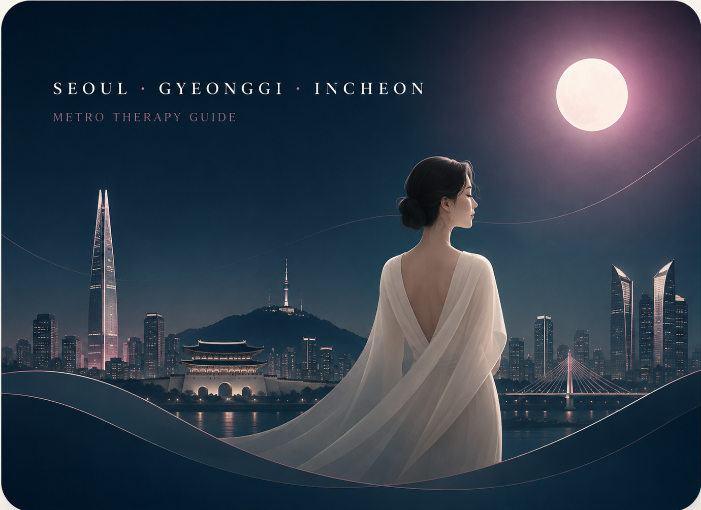

쥬쥬테라피
시간별 코스를 비교할 수 있는 지역 관리 안내입니다.
| 타이코스 | 60분 60,000원 · 90분 80,000원 · 120분 100,000원 |
|---|---|
| 전신아로마 | 60분 70,000원 · 90분 90,000원 · 120분 110,000원 |
| VIP스페셜 | 60분 100,000원 · 90분 120,000원 · 120분 140,000원 |
| 한국인스웨디시 | 60분 140,000원 · 90분 180,000원 |
0507-1280-3354
서울·경기·인천을 먼저 선택하고 세부 구·시·군, 다시 동·읍·면으로 내려가며 지역 정보를 확인할 수 있습니다. 지역을 고른 뒤에는 네 곳의 업체와 코스, 가격, 이용시간을 한눈에 비교할 수 있습니다.

현재 페이지는 세부 지역 단계입니다. 아래에서 업체와 코스, 지역 정보를 자세히 비교할 수 있습니다.
지역을 먼저 확인한 뒤 업체별 코스 구성과 시간을 비교할 수 있도록 정리했습니다.
시간별 코스를 비교할 수 있는 지역 관리 안내입니다.
| 타이코스 | 60분 60,000원 · 90분 80,000원 · 120분 100,000원 |
|---|---|
| 전신아로마 | 60분 70,000원 · 90분 90,000원 · 120분 110,000원 |
| VIP스페셜 | 60분 100,000원 · 90분 120,000원 · 120분 140,000원 |
| 한국인스웨디시 | 60분 140,000원 · 90분 180,000원 |
이용 시간을 중심으로 네 가지 관리 구성을 비교할 수 있습니다.
| 타이 코스 | 60분 60,000원 · 90분 80,000원 · 120분 100,000원 |
|---|---|
| 아로마 코스 | 60분 70,000원 · 90분 90,000원 · 120분 110,000원 |
| 스페셜 코스 | 60분 100,000원 · 90분 120,000원 · 120분 140,000원 |
| 한국인 코스 | 60분 140,000원 · 90분 180,000원 |
건식·센슈얼·혼합·한국인 스웨디시 코스를 비교할 수 있습니다.
| 건식 테라피 | 60분 60,000원 · 90분 80,000원 · 120분 90,000원 |
|---|---|
| 센슈얼스웨디시 | 60분 90,000원 · 90분 110,000원 · 120분 130,000원 |
| 전신혼합VVIP | 60분 100,000원 · 90분 120,000원 · 120분 140,000원 · 150분 180,000원 |
| 한국인 스웨디시 | 60분 140,000원 · 90분 180,000원 |
건식·아로마·스웨디시·VIP 코스를 비교할 수 있습니다.
| 건식 힐링 | 60분 60,000원 · 90분 80,000원 · 120분 100,000원 |
|---|---|
| 아로마 힐링 | 60분 70,000원 · 90분 80,000원 · 120분 100,000원 |
| VIP 스페셜 | 60분 100,000원 · 90분 120,000원 · 120분 150,000원 |
| 한국 관리사 | 60분 150,000원 · 90분 180,000원 |
| 한국인 골든스웨디시 | 60분 140,000원 · 90분 190,000원 |
|---|---|
| 20대혼혈프리미엄 | 60분 110,000원 · 90분 130,000원 · 120분 150,000원 |
안양동 지역을 고를 때는 단순히 가까운 곳만 보는 것보다 현재 위치, 이동 시간, 원하는 관리 방식, 이용 가능한 시간대를 함께 정리하는 것이 좋습니다. 같은 지역 안에서도 생활권과 이동 동선이 다르기 때문에 세부 위치와 희망 시간을 먼저 확인하면 선택 과정이 훨씬 간단해집니다.
안양동 안의 세부 지역을 먼저 살펴본 뒤 업체와 코스를 비교하면 불필요한 이동과 반복 검색을 줄일 수 있습니다.
관리 코스는 이름만으로 결정하기보다 건식 중심인지, 오일을 사용하는지, 전체 이용 시간이 어느 정도인지 비교하면서 일정에 맞춰 살펴보는 편이 좋습니다.
처음 이용하는 경우에는 현재 지역과 세부 위치, 희망 시간, 원하는 코스, 이용 시간을 한 번에 정리해 문의하면 필요한 정보를 빠르게 확인할 수 있습니다. 평일과 주말, 낮과 늦은 시간은 이동 상황과 가능한 일정이 달라질 수 있으므로 같은 지역이라도 실제 문의 시점의 상황을 다시 확인하는 것이 좋습니다.
어느 구나 어느 동에 있는지 정도는 먼저 정리해두는 것이 좋습니다. 특히 경기도는 시와 구가 함께 있는 곳이 많고, 인천도 생활권에 따라 이동 범위가 달라질 수 있습니다. 안양동 이용을 알아보는 경우에도 인접 지역까지 함께 살펴보면 선택 폭을 넓힐 수 있습니다.
대략적인 희망 시간대를 정해두면 코스 선택과 일정 확인이 쉬워집니다. 60분, 90분, 120분처럼 실제 관리 시간이 다르면 전체 일정도 달라지므로 이동 시간과 준비 시간을 함께 고려하는 것이 좋습니다.
쥬쥬테라피, 한국미인테라피, 오늘밤테라피, 퀸즈테라피는 코스 이름과 가격 구성이 조금씩 다릅니다. 같은 시간대의 가격, 관리 방식, 코스 구성을 함께 비교하면 차이를 이해하기 쉽습니다.
관리 방식이 익숙하지 않다면 코스 이름보다 실제 구성 설명을 먼저 읽는 것이 좋습니다. 건식은 오일을 사용하지 않는 압 관리와 스트레칭 중심으로 이해할 수 있고, 아로마 계열은 오일을 활용한 부드러운 흐름을 중요하게 보는 경우가 많습니다. 스웨디시 계열은 부드러운 관리 흐름과 충분한 시간을 선호하는 이용자가 살펴보는 경우가 많으며, 혼합 코스는 여러 관리 방식을 한 번에 비교하고 싶은 경우 확인할 수 있습니다.
첫째 현재 지역을 확인합니다. 둘째 원하는 시간대를 정합니다. 셋째 4개 업체의 코스와 가격을 비교합니다. 넷째 이용 시간을 결정합니다. 다섯째 문의할 때 현재 지역과 희망 시간, 선택한 코스를 함께 전달합니다. 이 사이트는 서울·경기·인천을 최상단에 두고, 그 아래 구·시·군, 다시 동·읍·면 순서로 내려가며 확인하도록 구성했습니다.
LOCAL MASSAGE GUIDE
안양동 마사지 지역 안내에서는 무엇보다 지역을 먼저 고르고 그다음 업체와 코스를 비교하는 흐름이 중요합니다. 업체를 먼저 정한 뒤 위치를 맞추려 하면 실제 이동 거리나 가능한 시간이 맞지 않을 수 있기 때문에, 현재 위치와 세부 생활권을 기준으로 선택 범위를 좁히는 편이 효율적입니다. 안양동에서 이용을 계획할 때는 현재 계신 동·읍·면, 희망 시작 시간, 원하는 이용 시간, 선호하는 관리 방식을 차례대로 정리해보세요. 마사지 코스는 건식처럼 압과 스트레칭을 중심으로 보는 방식, 아로마처럼 오일을 활용하는 방식, 스웨디시처럼 부드러운 흐름을 중요하게 보는 방식, 여러 요소를 함께 구성한 혼합 코스 등으로 나뉘어 안내되는 경우가 많습니다. 본인이 오일 사용을 원하는지, 강한 압을 선호하는지, 일정상 어느 정도 시간을 낼 수 있는지를 먼저 생각하면 가격표를 볼 때도 기준이 분명해집니다. 60분과 90분의 가격 차이만 보는 것보다 실제로 어느 코스가 어떤 방식으로 구성되어 있는지 확인하는 것이 중요합니다. 안양동 안에서도 시간대에 따라 이동 상황이 달라질 수 있으므로 당일 문의 전에는 위치와 시간을 다시 확인하는 것이 좋습니다. 전화나 문자로 문의할 때는 지역명과 세부 위치, 희망 시간, 선택한 코스와 이용 시간을 함께 전달하면 반복 설명을 줄일 수 있습니다. 이 사이트는 안양동 페이지에서 네 업체의 코스와 가격을 비교한 뒤 상위 지역 또는 인접 지역으로 이동해 다른 생활권까지 함께 살펴볼 수 있도록 구성되어 있습니다. 인접 지역과 이동 동선까지 함께 비교하면 당일 일정에 맞는 선택을 찾는 데 도움이 됩니다. 안양동 지역 정보를 확인한 뒤에는 현재 일정과 이동 범위를 기준으로 최종 선택을 정리해보세요.